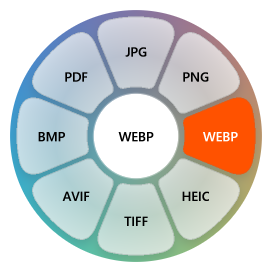

Press kit
Clementine is a zero-click, offline file converter for Windows. Drag a file, tap Shift, Alt, or Ctrl, and drop it on the radial wheel.
Facts
- Platforms: Windows 10 and 11, x64 and ARM64
- Built with Rust, Win32 and Direct2D
- About 8 MB working set, no background server, no telemetry
- 26 file tools and 6 file actions
- License: MIT
Assets

